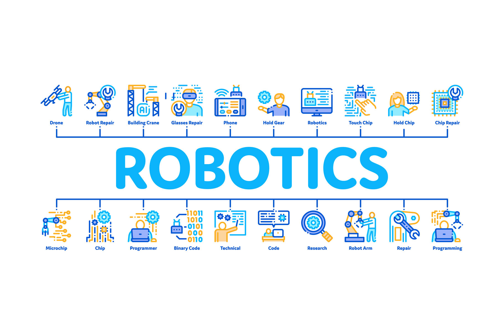

IT Technologies
Robots:
What does it do?
In today's climate we use the term robots to mean any man-made machine that can complete tasks either autonomously or by remote control. Examples of this are drones, assembly line robots, roombas, welding robots etc. Robots can do almost anything that they are programmed to do, this does not mean there is one robot that does 100 different tasks, it means that there are many different robots assembled and programmed by humans to complete said tasks. For example a welding robot welds objects together where a roomba cleans the floor. Robots are created to do repetitive tasks that humans are too lazy or busy to do such as clean the floor, assemble cars etc. they are also created to do things considered too dangerous for humans such as disarming a bomb. Robots don't have emotions or are considered living which makes it ethically and morally ok to use robots as tools. They are also cheaper and more efficient to use than humans making them a good alternative in a lot of different areas.
What is the state of the art of this new technology?
The state of the art of this new technology is a social robot named ASIMO built and programmed by Honda. Originally starting development in the year 2000 Honda have continued to improve and fine tune this state of the art robot to make it become one of, if not the best robot created at this point in time. The reasons as to why this robot is so important is because of the many features programmed into it. Some of these features include the ability to walk around with bipedal movement, the ability to go up stairs and can interact with humans by interpreting postures and gestures of humans (For example asimo can greet approaching people, follow them and even recognize humans by face and name). No other robot has come close to achieving the feats that ASIMO has accomplished, the amount of programming done to create a somewhat functioning robot like what is seen only in sci-fi movies is extraordinary and a sight to behold.
What can be done now?
What can be done now is that other manufacturers have started creating robots that replicate the behaviours of dogs as well as other robots that can pick themselves up if they fall down. Aside from these rare and expensive occasions smaller robots such as roombas and assembly line robots are becoming more commonplace in the world slowly changing human lifestyle and culture. The introduction of self driving cars has now become a lot more commonplace in the past 5 years which until recently was thought impossible that a car could drive itself. So even though ASIMO is still unbeaten in terms of a social robot, the implementation of robots in other areas of life shows how far the extent of robots have come in the past 5 - 10 years.
What is likely to be able to be done soon (say in the next 3 years)?
Within the next three years the introduction of a completely autonomous car could be a reality with companies like Tesla constantly pushing the boundaries the possibility is very likely. Also automated shipping services could also be achieved very soon with the implementation of Amazon's drone shipping being the precursor to this very event.
What technological or other developments make this possible?
The technological developments that allow for robots and more specifically in this case, fully autonomous vehicles to be a possibility in the next couple of years is the implementation of a wide range of technologies such as cameras, radars, ultrasound and radio antennas. For more explanation in Tesla's self-driving cars they employ eight cameras that provide a 360 degree view along with twelve ultrasonic sensors and short range radars that allow the car to analyze its surroundings for potential hazards. The problem is at the moment these cars can’t always detect every danger such as people running in front of the car and speed signs being graffitied on causing the car to have issues. However when these small issues are fixed in the coming years fully autonomous cars will be available to the public.
What is the likley impact?
The likely impact of the development of robots is that it will change how our society as a whole will function, from jobs to household appliances to the way we communicate and travel. The basis of human living will be shaken up with more large scale developments. Looking deeper into the examples listed earlier, it is clear to see that many things will change in the coming years. For example the introduction of automatic cars could lead to humans never having to drive again leading to a significant drop in car accidents as the self driving cars won't be subject to human error or intoxication, as well as self driving cars the further development of household appliances like the roomba could possibly lead to more people living sedentary lifestyles with robots doing the monotonous jobs humans find to boring to do such as vacuuming, cleaning etc. There are negatives to this however, with the constant influx and development of robots many people will or have already lost their jobs to these machines. Not too long ago the car manufacturing company known as Ford recently laid off “10% of their global salaried workforce cutting about 7,000 jobs as part of its larger restructuring as it prepares for a future of electric and autonomous vehicles.” Many companies are already starting to value robots over humans when it comes to monotonous jobs such as factory workers. Ushering in a new age where robots are now being used over human workers. This will and has made many jobs already redundant, once again going back to autonomous vehicles they could eventually replace bus, tram and taxi/uber drivers. However new jobs are created for those who have to maintain these robots. There are positives and negatives to the further development and commercial use of robots, as long as the human race is careful with what robots become there is no downside to making our lives easier.
How will this affect you?
In my daily life this will affect me in various ways currently and for the years to come. The way this affects me is that currently in my household my family and I own a roomba and a google home, the introduction to these robots in my home have definitely altered the way my family acts and behaves. We no longer need to vacuum the floors as much as we used to thanks to the roomba and the addition of google home has allowed us to communicate with each other and the internet without even having to look at our phones. For example when sitting on the couch watching the AFL my father will ask google for the stats on a certain player such as “hey google, how many goals has Brent harvey kicked?” Another example is my mother asking google home to step her through a new recipe.
What will be different for you?
What will be different to me as time passes on will be how I approach certain situations and what I do in my daily life, more specifically what jobs that I currently do will be handed over to robots. Small tasks like taking the rubbish out, cooking dinner and cleaning the house could all be done by robots in the near future giving me more free time and changing my lifestyle (i.e. making me lazier).
How might this affect members of your family or your friends?
This might affect some of my family members through the introduction of aged-care robots. Zora is a robot used in aged care that joins the elderly in activities such as aerobics, playing memory games, singing, and reading books and newspapers. These robots can greatly affect the lifestyle that my grandparents live. With the help of google home and other robots communication between my friends have been affected as simply asking google to call someone has made it so much easier to talk to them when i'm busy doing something and can’t get to my phone. The introduction and further development of robots have affected many lives and will continue to affect more and more in a positive way, and i will watch closely with great interest as to what will be accomplished in the future.